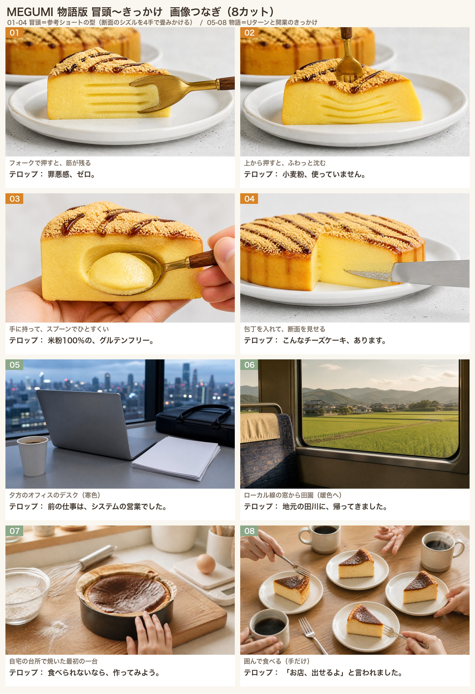

グルテンフリーチーズケーキ専門店／福岡県田川市弓削田610-5
これは別バージョンです。先にお送りした45.5秒版とは冒頭と中盤が違います。
再生できない場合は こちらからダウンロード
フォークで押して筋が残る → 上から押してふわっと沈む → 手に持ってスプーンですくう → 包丁を入れて断面を見せる。 柔らかさと濃厚さを、4つの動作で畳みかけます。
この冒頭のテロップは、あえて小さめ・中央・白一色にしています。画を主役にするためです。
前の仕事はシステムの営業 → 地元の田川に帰ってきた → 小麦を控えはじめてケーキが食べられなくなった → だったら自分で作ってみよう → 食べてもらったら「お店、出せるよ」と言われた。
すべてお打ち合わせでお話しいただいた内容から組んでいます。こちらで作った話は入れていません。
お打ち合わせで「白砂糖を使ってない分、罪悪感なく食べられたら嬉しい」とおっしゃっていた、 その言葉をそのまま冒頭に置きました。宮崎様ご自身の動機の言葉です。
| # | 時間 | 画 | テロップ |
|---|---|---|---|
| S01 | 0:00-2.0 | フォークで押して筋が残る | 罪悪感、ゼロ。 |
| S02 | 2.0-4.0 | 上から押してふわっと沈む | 小麦粉、使っていません。 |
| S03 | 4.0-6.5 | 手に持ってスプーンですくう | 米粉100％の、グルテンフリー。 |
| S04 | 6.5-9.0 | 包丁で切って断面を見せる | 小麦粉ゼロの、濃厚チーズケーキ。 |
| S05 | 9.0-12.0 | 夕方のオフィスのデスク | 前の仕事は、システムの営業でした。 |
| S06 | 12.0-15.0 | ローカル線の窓から田園 | 地元の田川に、帰ってきました。 |
| S07 | 15.0-18.0 | 自宅の台所で焼いた最初の一台 | 食べられないなら、作ってみよう。 |
| S08 | 18.0-21.0 | 囲んで食べる | 「お店、出せるよ」と言われました。 |
| S09 | 21.0-24.0 | 米粉をふるう | 小麦粉のかわりに、米粉を。 |
| S10 | 24.0-27.0 | 生地を混ぜる | ひとつひとつ、手作りで。 |
| S11 | 27.0-30.0 | 焼き上がりを取り出す | 焼き上がるのは、濃厚チーズケーキ。 |
| S12 | 30.0-33.0 | 店頭メニュー表 | 小麦・白砂糖 不使用／保存料・添加物 不使用 |
| S13 | 33.0-36.0 | 黒蜜きなこの盛り付け | 看板メニューは、黒蜜きなこ。 |
| S14 | 36.0-39.5 | 店頭での接客 | 「甘いもの、我慢してた」 |
| S15 | 39.5-43.0 | 接客の引き＋のれん | 小麦を休む、ごほうび。 |
| S16 | 43.0-46.0 | 開店日の外観 | 田川市弓削田で、お待ちしています。 |
| S17 | 46.0-51.0 | エンドカード | 住所・TEL・営業時間・Instagram |
動画で使っている画を並べたものです。

冒頭の4カット、物語の4カット、最後のエンドカードの背景です。 実際の黒蜜きなこや、お店の世界観に合わせて作っていますが、本物の写真ではありません。
このまま広告として世に出すことはいたしません。実際の商品と違う画を広告に使うと景品表示法上の問題になるためです。 お写真や動画をいただき次第、差し替えます。
なお、宮崎様のお顔はAIで作っていません。物語のカットはすべて手元と風景だけにしています。
・ナレーションはまだ入れていません。方向性にOKをいただいてから、女性のやわらかい声で入れます。
・エンドカードの営業時間は Instagram の記載をもとにしています。最新と違えばお知らせください。
・気になるカットはカット番号（S01〜S17）でお知らせいただけると助かります。